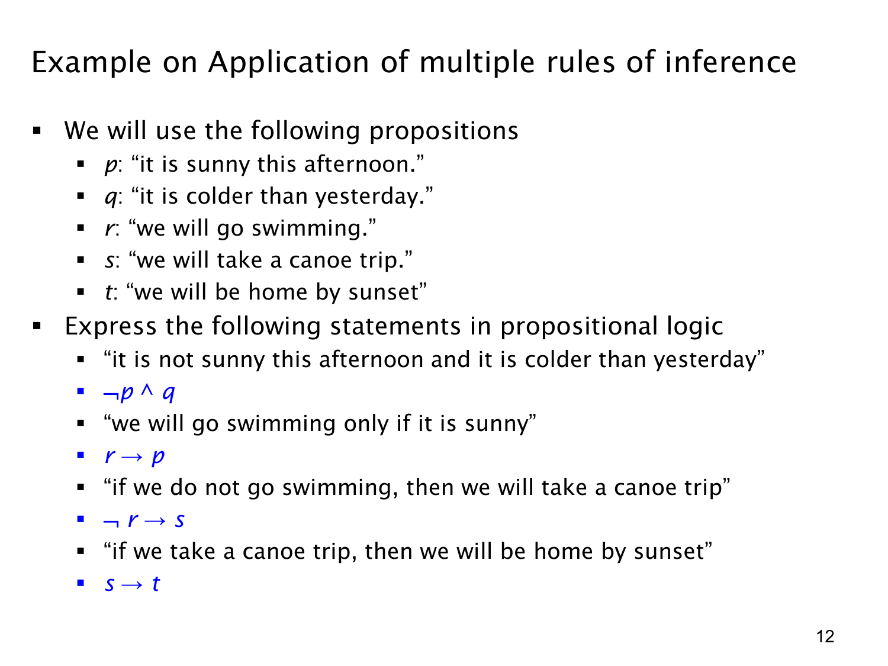

L1.3 · 第 12 页讲解原文
查看这一页课件

多步推理准备：把天气与活动陈述写成公式
这页先为一个多步推理例子统一命题符号：p 表示“今天下午晴朗”，q 表示“今天比昨天冷”，r 表示“我们会去游泳”，s 表示“我们会乘独木舟出游”，t 表示“我们会在日落前到家”。随后把四句自然语言准确翻成公式，作为后续推理的前提。
- “今天下午不晴朗，并且比昨天冷”：¬p∧q。两个陈述必须同时成立，所以是合取。
- “只有在晴朗时，我们才会去游泳”：r→p。“p 是 r 的必要条件”；若真的去游泳，必须晴朗。不能因为句子里先提到“晴朗”就写成 p→r。
- “如果我们不去游泳，就会乘独木舟出游”：¬r→s。前件是“不游泳”，后件是“出游”。
- “如果乘独木舟出游，就会在日落前到家”：s→t。
尤其要分清第二句的 only if（仅当）：r→p 只说明游泳需要晴朗，不说明一晴朗就一定游泳。这个方向决定了能否从已知的 ¬p 推出 ¬r。
本页主要是建立符号与前提，尚未完整写出由它们推结论的所有步骤。已经可以看到后续可能串联的方向：从 ¬p∧q 取出 ¬p，再利用 r→p 的逆否方向处理 r；具体的规则链要按后续课件继续核对。